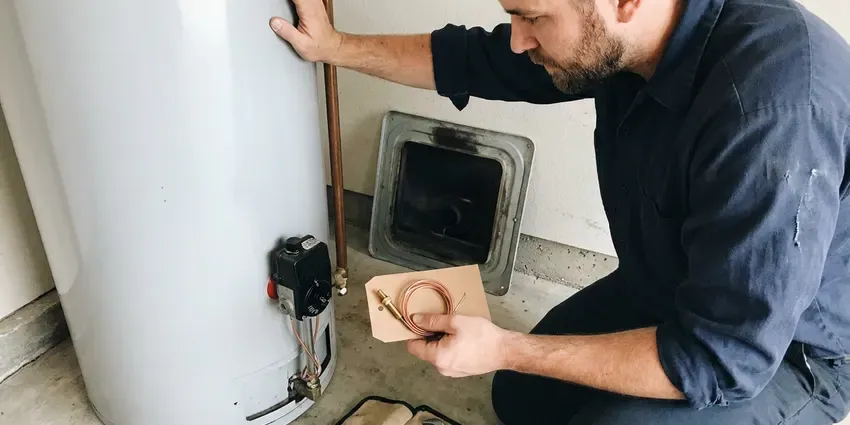
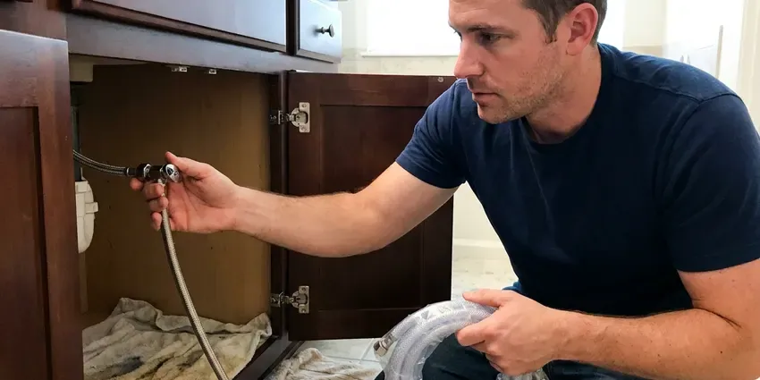
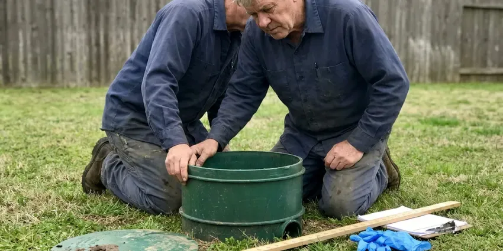

Gas Leak Repair in Minot, ND
If you smell gas or suspect a leak in your Minot, ND home, call HPN Plumbing immediately. We are your local experts for safe and efficient gas line repairs.
- Certified Gas Technicians
- Safety First Approach
- Licensed Gas Line Plumbers
- Fast Emergency Response

Safe, code-compliant gas leak repair from licensed plumbers in Minot, ND.
Your safety is our priority. Contact HPN Plumbing for immediate assistance with any gas leak concerns.
Gas Leak Repair in Minot, ND for Interior, Appliance and Yard Gas Lines
HPN Plumbing repairs natural gas and propane leaks in Minot homes and businesses, from loose fittings at the water heater to corroded steel lines buried in the yard. We isolate each section, pressure test it and repair or replace the leaking components.
Our expertise includes:
- Appliance connector, shutoff valve and sediment trap replacement
- Electronic gas detection and gauge pressure testing of every branch
- Strict adherence to North Dakota plumbing and gas codes

Additional Plumbing Repair Services in Minot, ND
We offer expert plumbing repair services across Minot, ND to fix leaks, restore flow, and keep your system running smoothly.


Minot water heater repair specialists


Water Leak Repair service for Minot homeowners


Septic Tank Repair in Minot

Customers
Why Choose HPN Plumbing for Gas Leak Repair in Minot, ND?
North Dakota homes, especially older properties or those with shifting foundations, can develop gas line issues. Our focused service makes sure your gas system is secure and up to code.
- Safety First, We put the safety of your family and property above all else during gas leak repairs.
- Rapid Response, We offer quick response times to address gas leaks promptly, minimizing risk to your property.
- Safety Certified, Our technicians are fully certified and follow strict safety guidelines for all gas line work.
Citywide Coverage
From the busy downtown to the quiet suburbs, our gas leak repair services reach across all of Minot. We understand the local infrastructure and can provide focused solutions for your home.
Experienced Team
The team works with black iron, CSST brands like TracPipe and Gastite, and polyethylene yard pipe. That range lets them repair any part of your gas piping.
Safety-First Approach
We never work on a live leak in an enclosed space without ventilating and controlling ignition sources. Utility red tags are respected, and we coordinate with the utility for relights when needed.
Trusted Certified Minot Plumbing Services Professionals
At HPN Plumbing, we take pride in providing licensed, certified plumbing services throughout Minot, ND. Backed by leading industry credentials, our experienced plumbers combine technical skill with genuine customer care. Whether it is repair, installation, or maintenance, we follow strict safety and quality standards to deliver long-lasting results you can trust.
Call Us Now PHCC Plumbing Contractor Recognition
PHCC Plumbing Contractor Recognition Better Business Bureau (BBB) Accreditation
Better Business Bureau (BBB) Accreditation Angi Certified Pro
Angi Certified Pro ISO 9001 Quality Management Certification
ISO 9001 Quality Management CertificationCareful Gas Leak Repair Services in Minot, ND
Interior Gas Pipe Repair in Minot, ND
Leaks inside walls, attics or garages typically occur at threaded fittings or unions. We tighten, reseal or replace fittings and damaged pipe with approved materials. Where access is difficult, rerouting with CSST can avoid major wall damage. All work is pressure tested before the gas is turned on.

Propane Gas Leak Repair in Minot, ND
Rural homes often run on propane from an above-ground or buried tank. Leaks may occur at regulators, tank connections or underground lines. Because propane is heavier than air, leaks can collect in low areas. We test the full system, repair the leak and verify correct regulator pressures.
Gas Line Replacement and Upgrades in Minot, ND
Sometimes a repair will not do, and a section or entire gas line needs replacement due to age, extensive corrosion or improper installation. HPN Plumbing provides full gas line replacement services, upgrading old or failing lines with durable, modern materials that meet current safety standards. We can also upgrade line sizes if you are adding new gas appliances, so your Minot, ND home has enough and safe gas flow.
Red Tag Gas Repairs in Minot
When the gas utility finds a leak or unsafe condition, it may lock the meter or red tag an appliance. Service cannot be restored until a licensed contractor repairs the problem. We make the repair, perform the required pressure test and provide documentation. We then coordinate with the utility or inspector to restore service.
Gas Leak Detection in Minot
Some gas leaks are obvious from the rotten egg smell, while others are slow and hard to find. We pressure test the system with a gauge to confirm a leak, then isolate sections to narrow it down. Electronic combustible gas detectors and leak solution locate the exact fitting or pipe. Accurate detection keeps the repair smaller.
Gas Line Repair & Replacement in Minot, ND
Once a leak is identified, our team will recommend the most effective repair option. This could involve replacing a corroded section of pipe or re-making loose connections. For badly damaged or aged lines, a full gas line replacement might be necessary for long-term safety and compliance with North Dakota codes. We work with various piping materials, including black iron pipe and flexible corrugated stainless steel tubing, both common in North Dakota homes.
Gas Leak Repair Cost Comparison in Minot, ND
Simple fitting or connector repairs usually cost $150 to $450, including leak testing. Interior pipe repairs often range from $300 to $1,000, depending on access. Underground gas line repairs or replacements commonly run $1,000 to $4,000 based on length and depth. We give you a clear written estimate before starting.

Appliance Connector Replacement in Minot
Flexible connectors on ranges, dryers and water heaters can crack, kink or loosen. Older uncoated brass connectors are a known hazard and should be replaced. We install new coated stainless steel connectors with proper shutoff valves and sediment traps. Each connection is leak tested before the appliance is put back in service.
Gas Leak Repair Near Me in Minot, ND
When you search for 'gas leak repair near me' in Minot, ND, you want a company that responds fast and safely. HPN Plumbing is your local solution, offering prompt, expert service right to your doorstep. We are proud to be a dependable partner for all gas plumbing emergencies in the area.
When you need gas leak repair near me, the most important thing is a licensed plumber who follows safety procedures. HPN Plumbing brings detectors, gauges and repair materials on every gas call. We fix the leak and make sure the whole system is leak free.
HPN Plumbing at a Glance
- Fully licensed plumbing team covering Minot, ND
- 24/7 emergency service with same-day scheduling
- Clear written estimates, no hidden fees
- 4.9-star rated by 408+ North Dakota customers
Minot Map
Minot Information
- Population
- 47,373
- Area codes
- 701/406/320
- Service area
- Minot and communities within 40 miles
- Nearby
- Minot AFB, Watford City, Mandan, Bismarck
Long, bitterly cold winters are the defining climate stress in North Dakota, putting heavy demand on water heaters and heating systems. Ground movement and corrosion can both cause leaks, so keeping gas lines sound is key for homes in Minot, ND and their long-term safety.
Expert Services
Trust our professionals for reliable HPN Plumbing solutions in Minot, ND.
Our Specialized Plumbing Services in Minot, ND
At HPN Plumbing, we provide a complete range of plumbing services across Minot, ND. From leak detection to full system installations, our team ensures fast, precise, and affordable service for both residential and commercial properties. Explore our core services below:


How Our Gas Leak Repair Process Works in Minot, ND
Here is what happens when you call us for a gas leak repair.
Request a Quote
If you smell gas, leave and call your gas utility first, then call (701) 403-1348 for the repair. We schedule the earliest safe visit and explain what to expect next.
Test and Locate
We pressure test the system, isolate sections and pinpoint the leak with detection equipment. You receive a firm price for the repair before work begins.
Repair and Restore
We repair the leak with approved materials and pressure test the full system. Appliances are relit and checked, or service is arranged with the utility.
Frequently Asked Questions About Gas Leak Repair in Minot
Small fitting or connector repairs typically cost $150 to $450. Interior line repairs often run $300 to $1,000, and underground line replacements typically range from $1,000 to $4,000. We quote before any work begins.
Most areas have no annual requirement for homeowner gas line inspections, but it is strongly recommended to have your gas lines inspected every 3 to 5 years, or whenever you notice a potential issue like an odd smell or a drop in appliance performance. Regular inspections can identify problems before they become hazardous leaks, especially where ground movement or tree roots are a concern.
HPN Plumbing stands behind the quality of our gas leak repairs with a comprehensive warranty on parts and labor. The specific terms of the warranty will be provided with your service agreement, offering you peace of mind that your repair is durable and reliable for the long term.
Yes, significant gas line repairs or replacements in Minot, ND typically require a permit from the local building department. This ensures the work meets safety standards and is inspected by local officials. HPN Plumbing handles all necessary permitting and inspections for you.
Yes, our technicians are experienced in inspecting and repairing gas lines connected to all major brands of gas appliances, including water heaters from Rheem, Bradford White and A.O. Smith, as well as ranges and dryers from brands like Whirlpool, GE and Samsung. We make sure the connection to your appliance is tight and leak-free.
For major gas line repairs or replacements in North Dakota, particularly those involving altering or adding to the existing system, permits from local building authorities are typically required. HPN Plumbing will handle all required permitting and make sure the work passes all required inspections, in full compliance with local codes.
We repair all types of gas lines found in North Dakota homes and businesses, including black iron pipe, galvanized steel, copper and modern corrugated stainless steel tubing. Our technicians are experienced with various piping materials and connection methods.
The most common signs of a gas leak include a distinct smell of rotten eggs or sulfur, a hissing or whistling sound near a gas line, visible damage to a gas pipe or dead vegetation over an underground gas line. Indoor symptoms might also include dizziness, nausea or fatigue. If you notice any of these, evacuate and call for help right away.
What People Are Saying About Our Plumbing Experts?
Daniel K.
A pipe burst at 11 pm and they actually answered. The plumber showed up within the hour, shut everything down, and had us back to normal the next morning. Could not ask for more.
Emergency Plumbing · Williston, ND
James P.
Our commercial plumbing system had a leak under the sink, and HPN Plumbing handled it professionally. The plumbers arrived quickly and restored everything without disruption to our customers.
Commercial Plumbing · Williston, ND
Laura S.
I scheduled a water heater replacement, and the team made the process smooth and affordable. The new unit works perfectly, and they cleaned up after completing the job.
Water Heater Replacement · Minot AFB, ND
Mark T.
When our office needed drain cleaning, HPN Plumbing provided quick, reliable service. The plumber arrived on time and made sure every drain flowed perfectly before leaving. Very satisfied.
Drain Cleaning · Watford City, ND
Emily R.
I called HPN Plumbing for plumbing repair, and the technician was fast, polite, and thorough. They explained the problem clearly and fixed it the same day. I will definitely hire them again. Highly recommended!
Plumbing Repair · Minot, NDRobert G.
The trenchless sewer replacement saved our front yard. They walked us through the camera inspection footage first so we knew exactly what we were paying for.
Sewer Line Replacement · Watford City, ND